Building and deploying configuration templates via Control Hub
Abstract
One of the easiest and most effective ways to deploy a series of configuration changes to RoomOS devices is through Control Hub configuration templates. In this lab we'll build a device-level template that sets your volume and turns Macros on. Hang on to that second setting; the CE-Deploy macro lesson later in this module needs it. Then we'll zoom out and peek at how the same idea scales up to an entire organization.
Tip
Configuration Templates are hierarchical. Configurations set on location and device levels override organization level device configurations.
flowchart TD
A[Organization Defaults] -->|overridden by| B[Location Defaults]
B -->|overridden by| C[Device Template]
C -->|overridden by| D[Manual Device Config]
style A fill:#0078D4,color:#fff
style D fill:#10B981,color:#fffThe device-level template you're about to build sits near the bottom of that stack — it wins over anything set at the organization or location level, which is exactly why it's the fastest way to guarantee a setting on one specific device.
If one of your devices doesn't support a specific value, you can't select that value on the organization or location level, even if all other devices support that value. This limitation also applies if one of the devices is running a software version that doesn't support a selected value. This doesn't impact configuring individual or multiple devices.
-
Where
Management → Devices → Templates, in Control Hub
-
Time
About 8 minutes
-
Goal
Build a device template that sets Volume and turns Macros on, then apply it to your device
dep-1.2 Lab
XX with your
two-digit pod number, and select Next. For example, pod 1 uses LabTemplate01.
{kind=link}
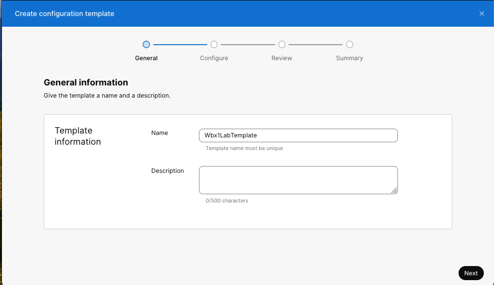
{kind=link}
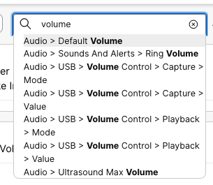
{kind=link}
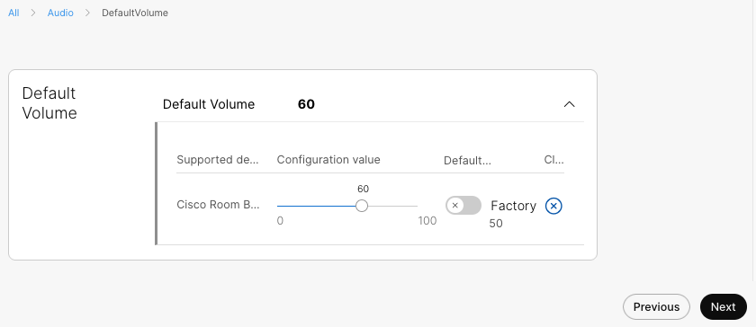
{kind=link}
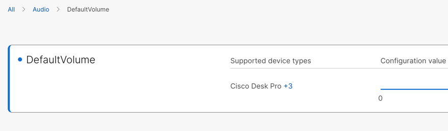
{kind=link}
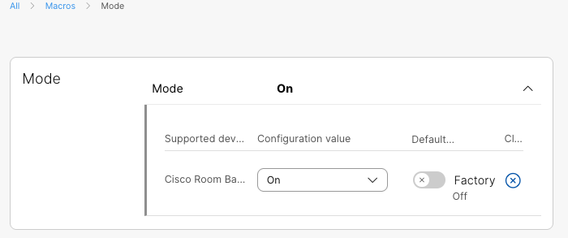
Why this matters later
Turning Macros On here is a required prerequisite — the CE-Deploy "Macros & UI Extensions" lesson later in this module deploys and runs a macro on this same device.
{kind=link}
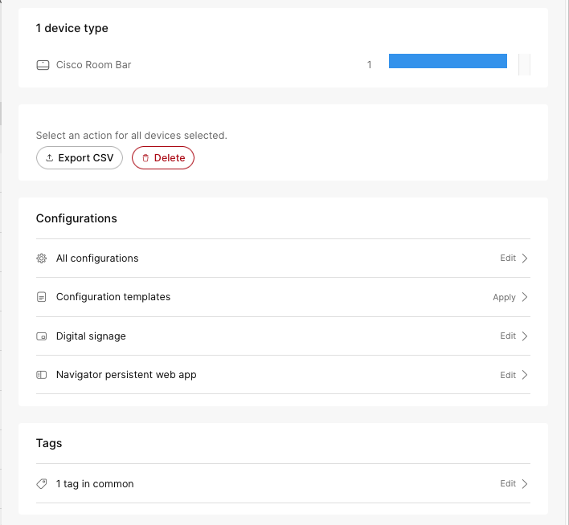
{kind=link}
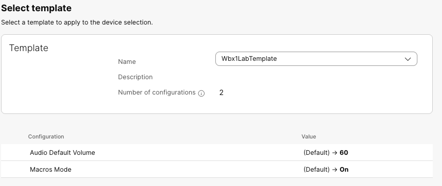
{kind=link}
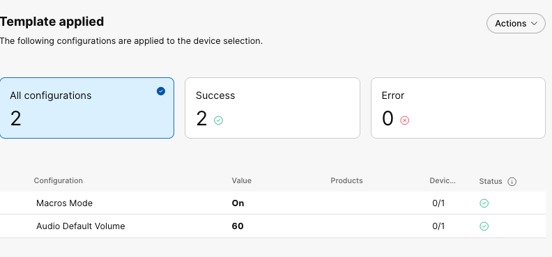
Success
Well done, your device now has Macros mode on and is ready for later lessons.
Zooming out: Org-Wide Defaults
Device templates like the one you just built are great for a specific device or group of devices. Control Hub also lets you set Configuration Defaults at the organization or location level, so every newly-added device inherits sane baseline settings automatically. No template needed.
Take a quick look: select Management>Devices>Settings>Configuration Defaults.
{kind=link}
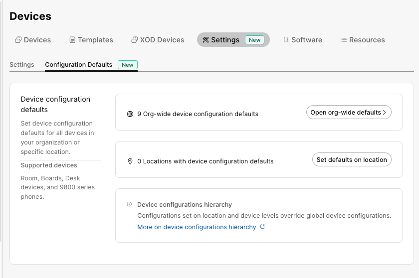
Then Open org-wide defaults. You'll see settings already provisioned by the lab. Browse Add configurations if you like, it's the same picker you just used.
{kind=link}
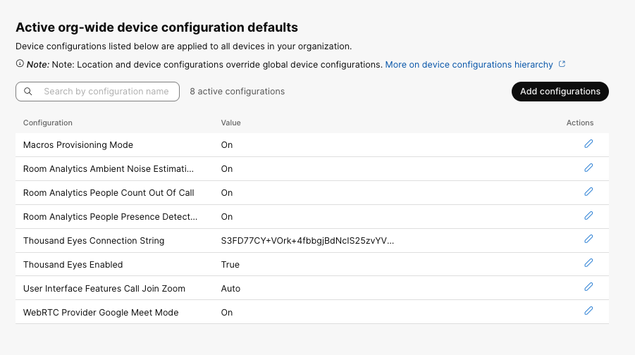
Just don't apply anything here — this lab environment has multiple pods sharing one organization, and an org-wide change would affect everyone else's devices too.
{kind=link}
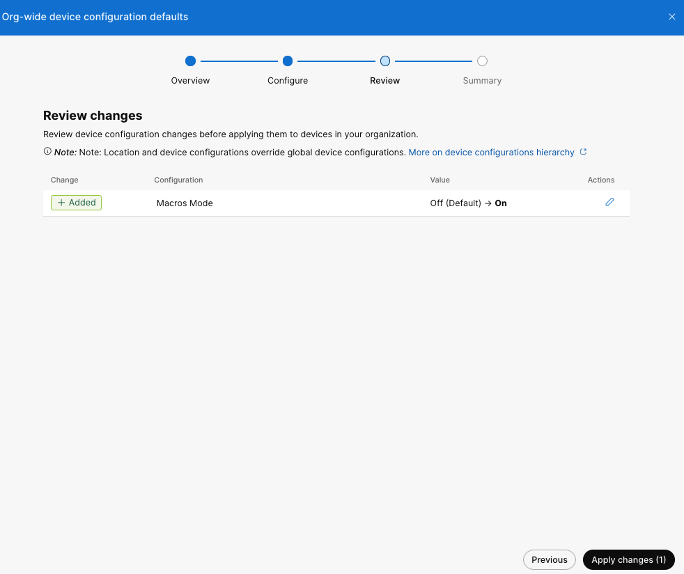
Keep this pattern in mind: device-level template (what you just did) vs. org-wide defaults (what you just previewed). You'll see it again in CE-Deploy as a bulk deployment to a tag/filter you choose, versus a Deployment Template you save once and reuse everywhere.